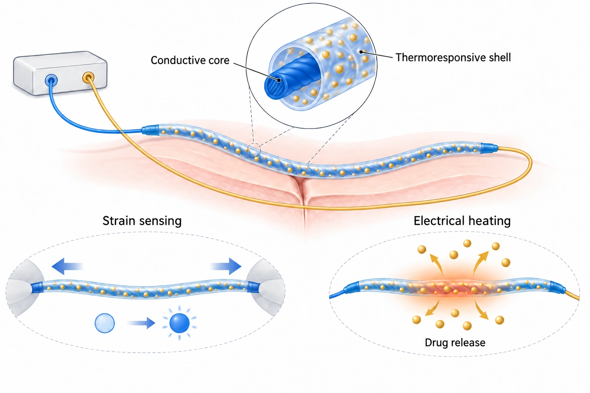

이 연구가 다루는 문제
봉합사의 늘어남을 저항 변화로 감지하고, 외부에서 공급한 전류의 열로 약물을 방출하는 다기능 전자 봉합사입니다. 세포 배양과 절제한 돼지 피부에서 기능을 평가했으며, 살아 있는 동물이나 환자의 치료 효과는 검증하지 않았습니다.
감지와 약물 방출을 더한 봉합사
봉합사에 변형 감지와 약물 방출 기능을 더하려면 조직 고정과는 별도의 설계가 필요합니다. DRESS는 한 섬유에 변형 감지와 외부 전류로 가열하는 약물 방출 구조를 결합합니다. 이러한 기능 통합의 결과와 임상 치료효과는 구분해야 합니다.
전도성 코어와 열응답 외층
구조는 AgNP/PU 전도성 코어, PDMS 보호·절연 중간층, 약물을 담은 PVA–PNIPAm 열응답 외층으로 나뉩니다. 코어의 저항 변화로 변형을 읽고 공급 전류의 줄 가열로 외층의 열응답과 방출을 유도합니다. 함께 수록한 개념도는 PDMS 중간층을 생략한 단순화이며 실제 전체 단면을 재현하지 않습니다.

AI로 만든 비축척 개념도입니다. 전도성 코어의 변형 감지와 외부 전류의 줄 가열로 열응답 외층에서 약물이 방출되는 원리를 보여 줍니다. 실제 구조의 AgNP/PU 코어와 PVA–PNIPAm 외층 사이에 있는 PDMS 보호·절연층은 생략했습니다.
AI로 만든 비축척 개념도입니다. 전도성 코어의 변형 감지와 외부 전류의 줄 가열로 열응답 외층에서 약물이 방출되는 원리를 보여 줍니다. 실제 구조의 AgNP/PU 코어와 PVA–PNIPAm 외층 사이에 있는 PDMS 보호·절연층은 생략했습니다.
논문 원그림을 복제한 이미지가 아니며, 원그림 재사용 허가를 의미하지 않습니다.
섬유 시험과 세포·적출 피부 평가
변형에 따른 저항, 전기 가열과 약물 방출을 각각 평가했습니다. 생물학적 시험은 NIH-3T3 세포의 시험관 내 스크래치 시험과 적출 돼지 피부의 체외 시연입니다. 세포 이동으로 빈 영역이 줄어든 결과를 살아 있는 동물이나 환자의 상처 치유율로 해석할 수는 없습니다.
변형 중 가열을 유지하는 제어
본문은 변형 감지와 열 유도 방출을 같은 봉합사에 구현하고, 변형에 따른 저항·온도 변화를 폐루프 전압 제어로 보정하는 구성을 설명합니다. 이 제어는 가열 조건을 유지하는 기능입니다. 상처의 치유 상태나 약물 농도를 자동 판정해 투여량을 결정하는 폐루프 치료를 검증한 것은 아닙니다.
생체 내 검증과 사용 조건의 과제
저자는 친수성 약물 적재의 제한과 생체 내 검증 필요성을 밝힙니다. 열 노출·방출·고정·반복 변형·장기 사용을 비교하려면 시험 조건을 맞춰야 합니다. 보충자료와 원자료는 해설 범위에 포함되지 않습니다. 외부 배선이 있는 시연은 무선·무전지 작동을 입증하지 않으며, 세포·적출 피부 시험은 사람의 안전성이나 치료효과를 검증하지 않습니다.
함께 읽을 연구
Wirelessly operated bioelectronic sutures for the monitoring of deep surgical wounds
DOI: 10.1038/s41551-021-00802-0 ↗
관련 연구의 초록은 살아 있는 돼지의 심부 상처에서 RFID 정전용량 봉합사를 평가합니다. DRESS는 열응답 약물 방출을 다루며 생물학적 평가는 세포·적출 피부에 한정됩니다.
무선 작동, 임상 검증, 치유효과는 각각 별도의 근거가 필요합니다.
초록을 참고한 소개RESEARCH NEWS
연구 소식
미확인 후보와 접근 제한 (1)
해설에 사용한 자료
해설은 RSC 본문의 서론, Results §2.1–2.3·2.5–2.9, Conclusions와 Experimental §4.1–4.12에 근거합니다. 전체 본문을 빠짐없이 다룬 범위는 아니며 보충자료·원자료는 포함하지 않습니다.